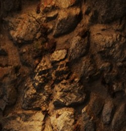
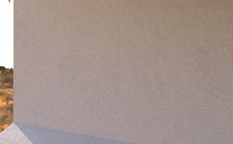
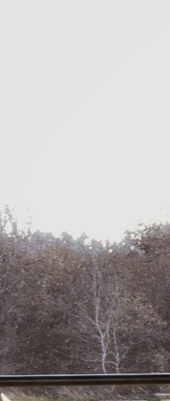
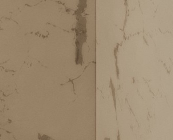
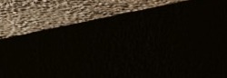
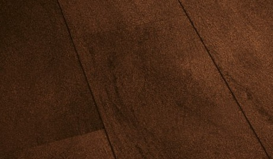
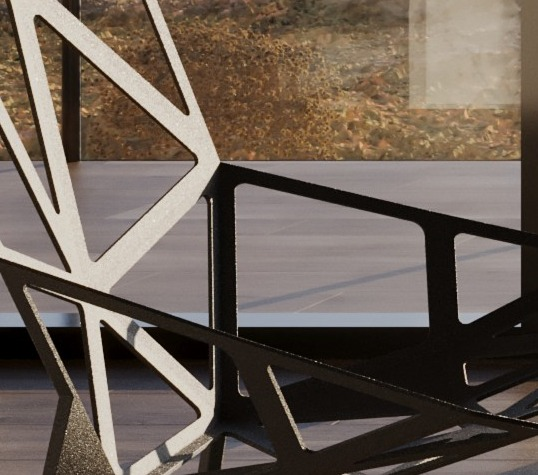
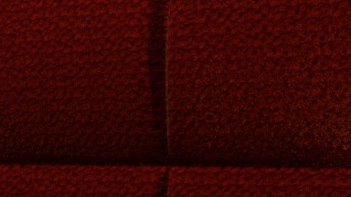

Studio dei Materiali
Le finiture selezionate per il progetto: pietra a vista e intonaco per l'involucro esterno, marmo e legno per gli ambienti interni, dettagli in metallo nero e tessuto per gli arredi. Ogni materiale è stato scelto anche in base a come reagisce alla luce naturale e artificiale nei render.

Pietra a Vista

Intonaco Bianco

Vetro Strutturale

Marmo Bianco Venato

Pietra Scura Testurizzata

Gres Porcellanato Effetto Legno

Metallo Nero Opaco

Tessuto Velluto Rosso